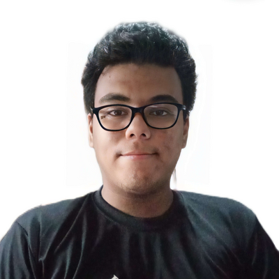
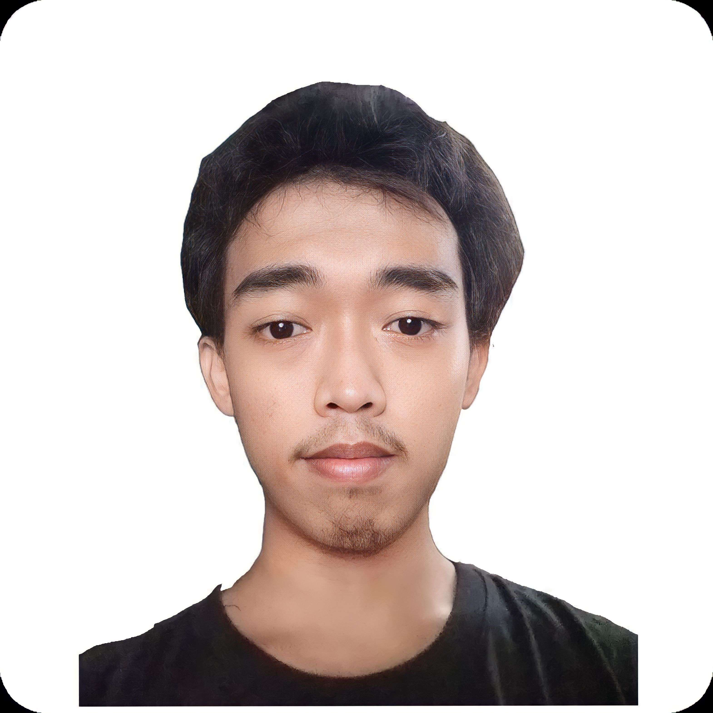
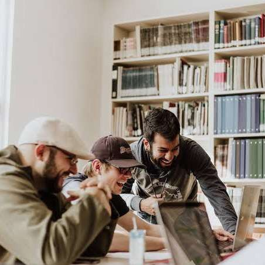

Our Team



VeloRyders Websystem's
Greetings!
"Welcome to VeloRyders, the ultimate destination for the cycling community. Our website is dedicated to all things related to cycling, including news, events, reviews, and resources. We aim to create a thriving online community for cyclists of all levels, from beginners to experienced riders. Whether you're looking to improve your cycling skills, connect with other riders, or discover new routes to explore, VeloRyders has everything you need. Join our community today and let's ride together!"